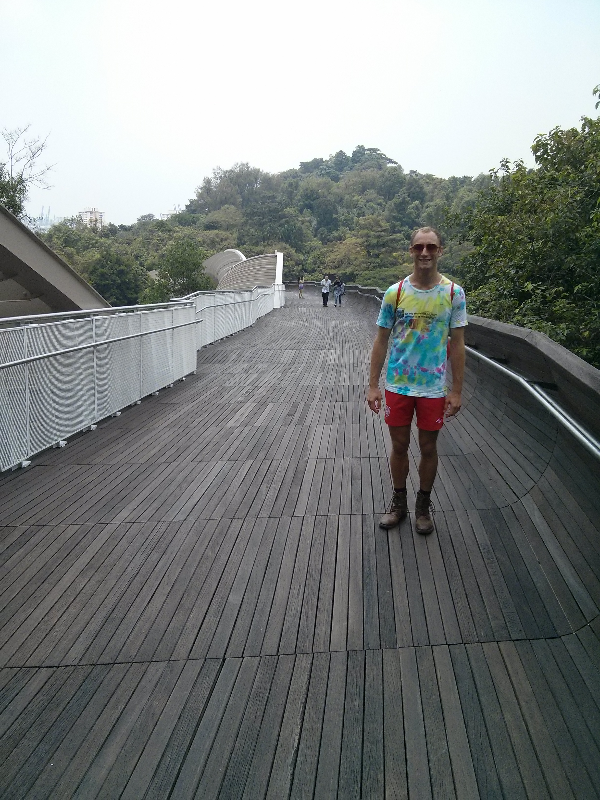
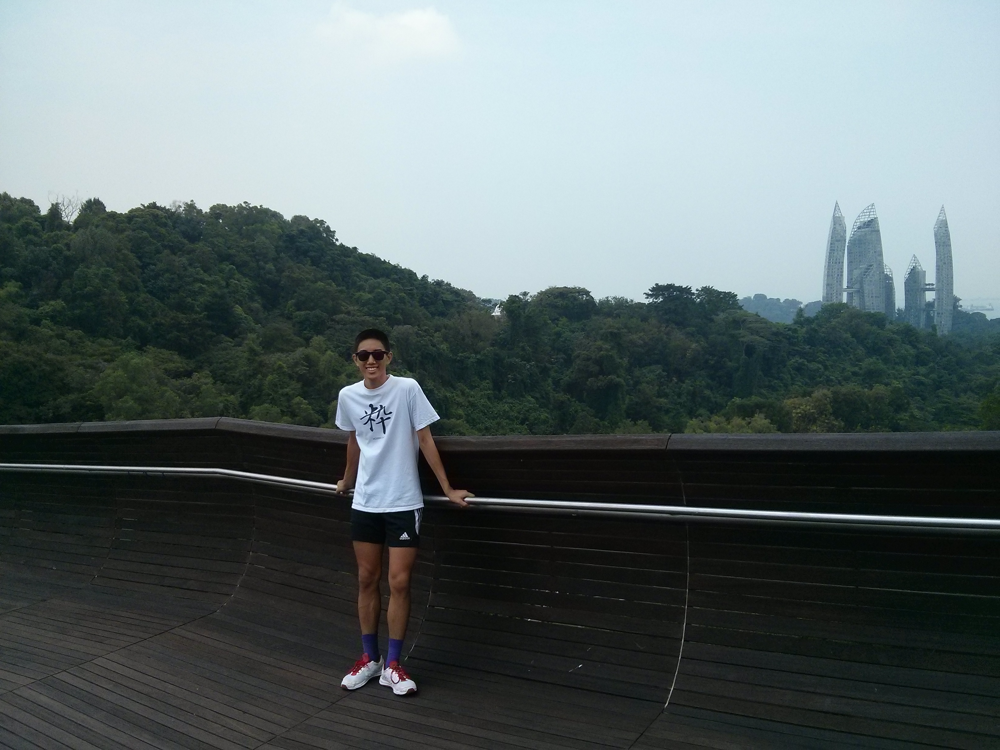

This is the walk that starts/ends at Mt. Faber near Harbourfront MRT station, and goes all the way up through to the Kent Ridge Park. We decided to start our way at Kent Ridge, near our campus, and then head towards Harbourfront which was closer to our house.
On the hike, you get a good mix of urban and natural spaces, probably a scene more unique to Singapore. One minute you're walking across this cool, architectural Henderson Wave Bridge, and then the next you are passing by some tropical jungle. Halfway in between, you'll come across this museum and cute cafe in the center of the 'forest', but with parking lots around, giving it that perfect blend of city and nature. All along the way, there were nature enthusiasts, bikers, and families just chilling around.
I would provide a map track of the place but other places will probably have done a better job. That, and probably for half the time we didn't even know where we were since it was just in a jungle, and we were following signs. When we finally made it to the Merlion on Mt. Faber (to which the cable car connects to Sentosa Island), we just walked down the hill, popped on the MRT, then called it a day!


Sorry the pictures aren't much greater. The café we ran into halfway through was worth taking pictures, as was some of the local gardens. There was at least another bridge or bridge-ish complex that we walked across but by that time, I was probably such a sweaty bitch that the last thing on my mind was fetching the camera out the bag. So this is all you gonna get!